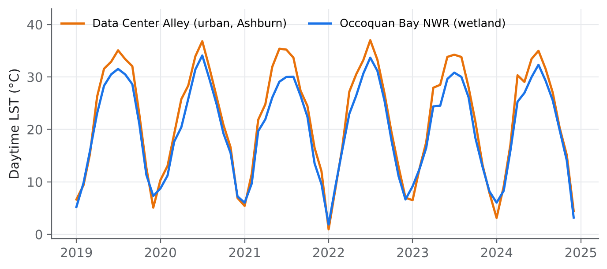
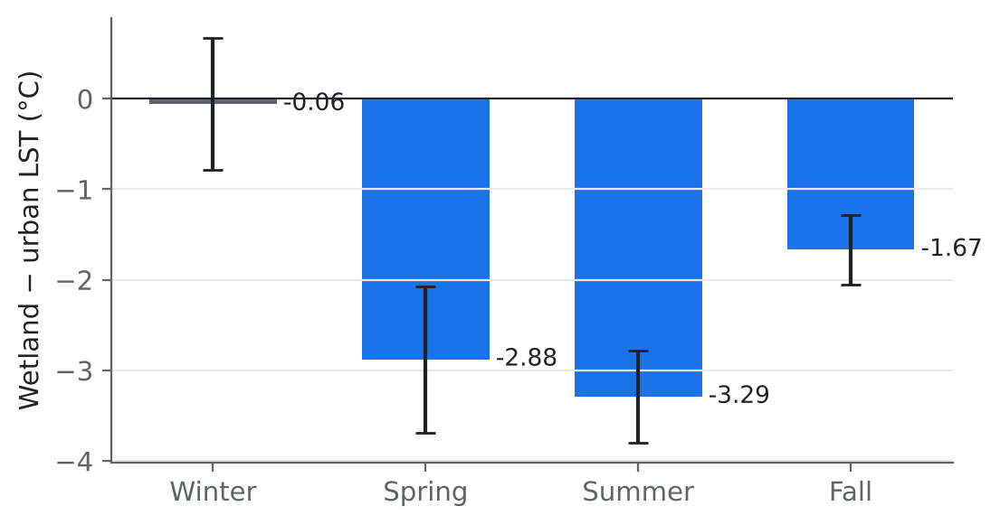
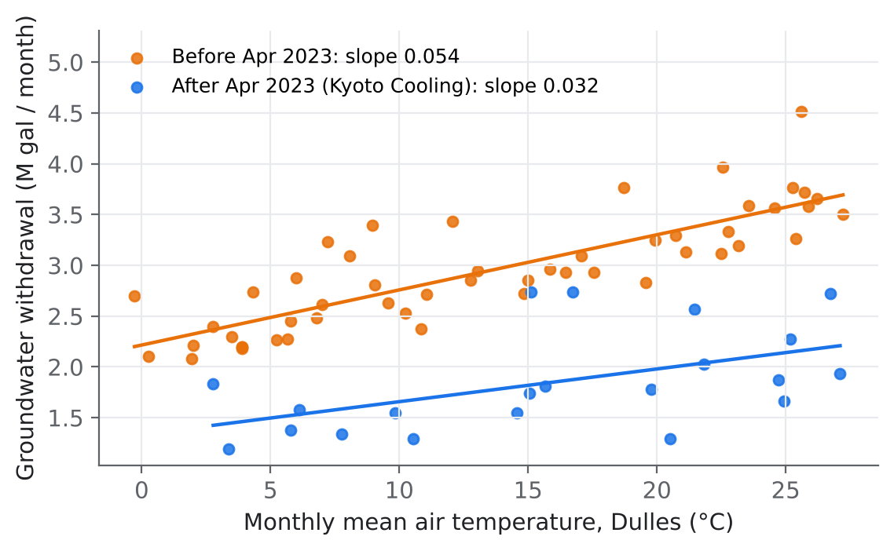
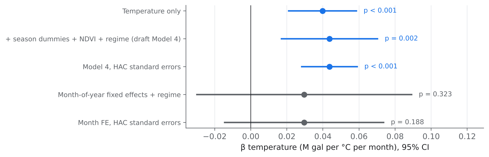

Can wetlands cool the water footprint of AI data centers?
Northern Virginia is the world's largest data center cluster, and its facilities used about 1.85 billion gallons of water in 2023. I study whether nearby wetlands lower the heat that drives that water use, using satellite data and state water records.
Key results so far
Wetlands run cooler in summer
Daytime surface temperature near Occoquan Bay wetland vs. Data Center Alley, 72 months (p < 0.001).
Heat raises water use
Extra monthly groundwater withdrawal per +1 °C at one data center in the pilot model (p = 0.002).
Cooling technology matters
Monthly drop in withdrawal after the facility's 2023 cooling retrofit (p < 0.001).




Scope of these results
The pilot compares one wetland with one urban area and one data center, so the results are suggestive, not final. The next phase scales the study to hundreds of wetlands and every reporting facility in the region.
What I did
Research design and analysis
- Framed a two-part study linking an ecological signal to an infrastructure outcome
- ANOVA with Tukey HSD; OLS with structural breaks, fixed effects and HAC errors
- Stress-tested my own findings and redesigned the study around the weak points
Data and tools
- Google Earth Engine: MODIS, Landsat, Sentinel-2, ERA5-Land, National Wetlands Inventory
- Virginia DEQ withdrawal records, NOAA climate data, public-records requests
- Python (pandas, statsmodels, matplotlib), JavaScript, Excel
Next steps
Pilot study and working draft
Two-site temperature comparison and single-facility water model
Earth Engine pipeline
Hundreds of wetland patches at 30 m, day and night temperature 2015 to 2025, wet-bulb weather at each facility
Multi-facility water panel
Monthly withdrawals for every reporting facility in Northern Virginia
Regional exposure model
Wetland cooling, wet-bulb temperature and water use across the data center fleet, with uncertainty
Journal submission
Peer-reviewed article
Code for the figures and the Earth Engine pipeline is on GitHub. The manuscript and data are available on request.